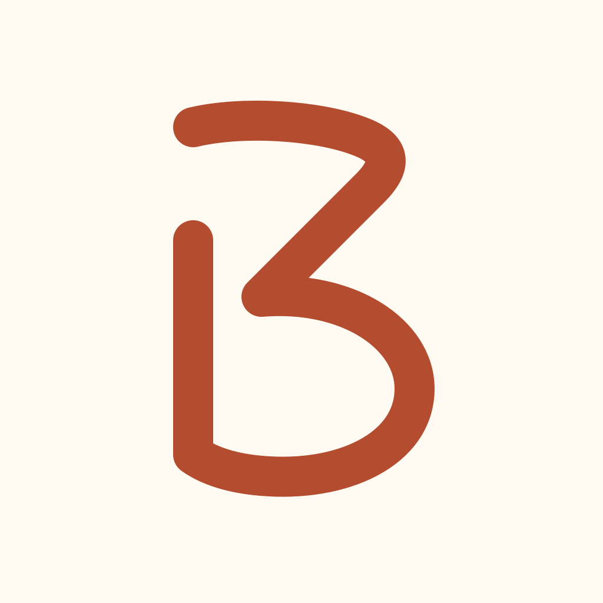
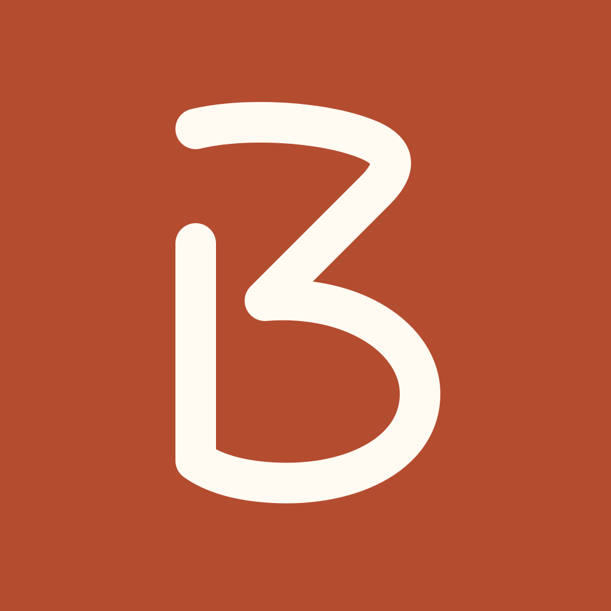
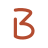
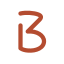
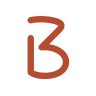

3bstays · biblioteca de marca
Identidad aprobada · terracota original #B44C30 y crema #FFFBF2 · 10 noviembre 2026
Los logos son transparentes: el crema de estas muestras es el fondo de la página. Los iconos del teléfono llevan solo la B terracota sobre crema, sin recuadro dibujado.
Icono del teléfono y perfiles

B abierta con asta alta. El sistema aplica su recorte.

Perfil crema 1080 · Perfil terracota 1080 · Favicon ICO
Favicon de pestaña
Terracota con B crema. El icono del móvil mantiene crema con B terracota.
16 px24 px32 px48 px
Iconos a tamaño real
16 px24 px32 px
48 px
64 px
96 px Tintas transparentes
terracota
#B44C30
crema
#FFFBF2
tinta
#1C2B2A
blanco
#FFFFFF
carbon-calido
#2B2926
Portadas con la fotografía original